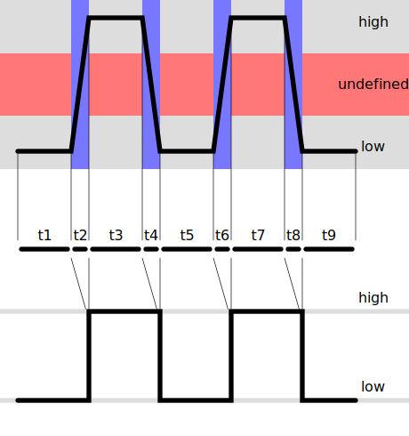

Logic Levels
In digital electronics, There are two logic states, 1 and 0, also known as high and low. Digital logic ICs are made in several different logic voltages, which are defined by the nominal voltage of the logic level 1, with logic level 0 generally being ground potential or 0v. The more common levels are: - 5v - 3.3v - 1.8v Since we operate in the analog world, where things are not so cut and dry, logic levels are defined as a range. For 5v logic, a low is from 0-1.5v and a high is from 3.5-5v. This means that even if there are external factors affecting the signal, it can still be interpreted by other ICs.
Level Shifters in the OSSM
The OSSM's motors operate in the 5v logic level, whereas the ESP32 operates at the 3.3v logic level. The ESP32's GPIO pins are largely regarded as "5v tolerant" however, that is for inputs only, meaning a logic 1 of 5v will likely not damage the chip. However, when the ESP32 outputs a logic level 1, that is 3.3v. Since the motor operates with a 5v logic level, 3.3v is inside the undefined zone. Being undefined, the motor may or may not respond to the step, this will result in lost steps and the OSSM will lose it's home. z 